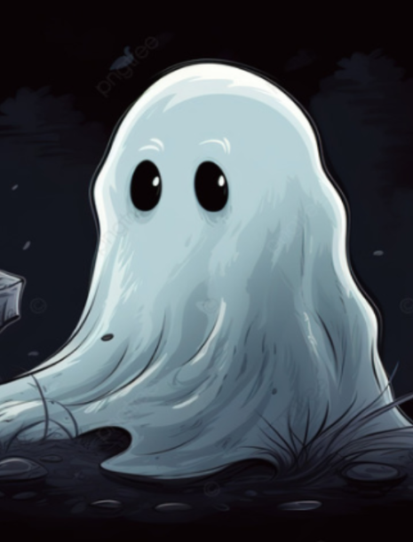
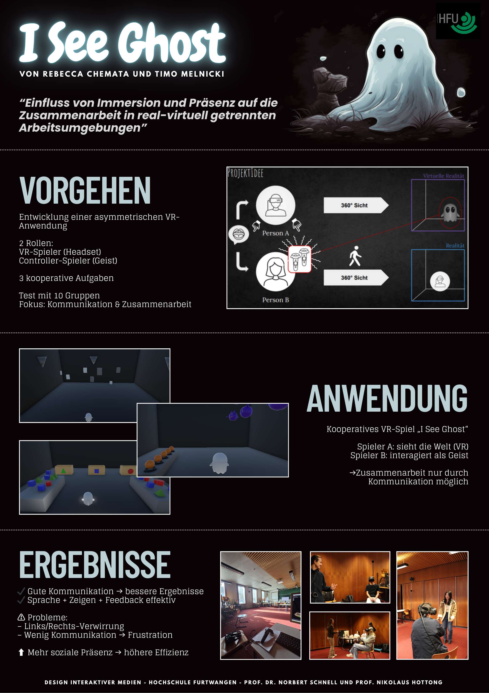

Einfluss von Immersion und Präsenz auf die Zusammenarbeit in real-virtuell getrennten Arbeitsumgebungen
Die Motivation für diese Arbeit entstand aus unserem gemeinsamen Interesse an kooperativen Videospielen
sowie dem Wunsch, praktische Erfahrungen in der Entwicklung von VR-Anwendungen zu sammeln.
Kooperationsspiele zeichnen sich für uns besonders durch das gemeinsame Problemlösen und Kommunikation aus.
Das sind Aspekte, die wir gezielt in ein VR-Szenario übertragen wollten.
Gleichzeitig wollten wir eine VR-Erfahrung entwickeln, die sich von klassischen Einzelspieler-VR-Anwendungen
abhebt und kooperative
Interaktion in den Mittelpunkt stellt. Ziel war es, spielerische Interessen mit dem Erlernen von
VR-Entwicklung zu verbinden und dabei neue Formen des gemeinsamen Erlebens in Virtual Reality zu erforschen.

Das Projekt verlangte sowohl technische als auch konzeptionelle Fähigkeiten in den Bereichen
Virtual Reality, Interaction Design und Game Design. Neben der Entwicklung einer funktionierenden
VR-Anwendung lag der Schwerpunkt insbesondere auf der wissenschaftlichen Untersuchung von Präsenz, sozialer
Interaktion und kooperativer Problemlösung innerhalb virtueller Umgebungen.
Im Verlauf des Projekts wurden verschiedene Konzepte iterativ entwickelt, getestet und überarbeitet. Die
ursprüngliche Idee eines komplexeren VR-Escape-Rooms wurde zugunsten eines reduzierten und stärker auf
Kommunikation fokussierten Ansatzes verworfen, um die Nutzer nicht mit Informationen zu überfordern und die
sozialen Interaktionen stärker hervorzuheben. Dadurch entstand eine Anwendung mit mehreren kleineren
kooperativen Aufgaben, die gezielt unterschiedliche Kommunikationsformen und Interaktionsmechaniken
untersuchten.
Durch die praktische Umsetzung in Unity sowie die Entwicklung und Modellierung der Assets mit Blender
konnten umfangreiche Erfahrungen in der VR-Entwicklung gesammelt werden. Gleichzeitig zeigte das Projekt,
wie entscheidend direkte Kommunikation, nonverbale Hinweise und multimodale Feedbacksysteme für erfolgreiche
Zusammenarbeit in virtuellen Räumen sind.
Besonders die Tests während der "Werkschau in Furtwangen" und der "Immersive Future Freiburg" lieferten wertvolle Erkenntnisse über Nutzerverhalten,
Kommunikationsstrategien und soziale Präsenz in asymmetrischen VR-Szenarien. Die Beobachtungen
verdeutlichten, dass nicht allein technische Immersion, sondern vor allem aktive soziale Interaktion und
abgestimmte Kommunikation die Qualität gemeinsamer Aufgabenlösung beeinflussen.
„I See Ghost“ verbindet somit wissenschaftliche Fragestellungen mit praktischer VR-Entwicklung und zeigt,
wie Virtual Reality genutzt werden kann, um neue Formen kooperativer Interaktion und gemeinsamer virtueller
Erfahrungen zu erforschen.